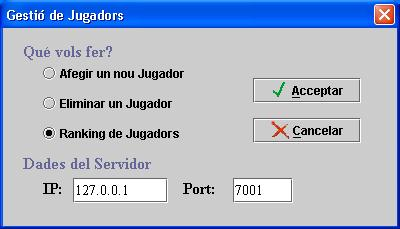

Al premer la pestanya de Usuaris obtenim el següent menú:  Aquest menú permet enviar el que volem fer al servidor. Per fer-ho, hem cal indicar la seva adreça IP i el Port al que ens connectem del servidor. Per donar d'alta nous usuaris en el sistema cal introduir un conjunt de dades: Nom, Cognom, mail, login i el password. Un usuari només es pot esborrar si aquest “està connectat, i introduint el seu login i password. El ranking dels jugadors permet mostrar la classificació dels jugadors registrats en el sistema. La classificació és segons les partides guanyades, perdudes, abandonades i empatades. Punts: Guanyades*5 + Taules*2 - Abandonades*2 - Perdudes;
|